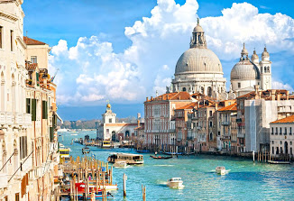

La construcción del Coliseo empezó bajo el emperador Vespasiano, en torno al año 71 d.C., en un espacio que había quedado liberado tras el incendio de un anfiteatro anterior levantado casi cien años atrás. La inauguración –cuyos festejos se prolongaron durante cien días– se produjo en el año 80 y ya bajo el reinado de su hijo Tito. Finalmente, el emperador Domiciano culminó las obras en el 82, añadiendo un último piso. De estructura interior radial, estaba organizado en cinco niveles en los que se agrupaba la muchedumbre, con áreas delimitadas según la clase social: cuanto más cerca de la arena se hallaban mayor era el rango al que pertenecían.

Es el lugar donde se desarrollaba toda la vida ciudadana en la antigua Roma: la política, la justicia, el comercio, la vida social y el culto a los dioses. Era el corazón de la Ciudad y está cargado de recuerdos de los principales protagonistas de su Historia.
Verdadero santuario de la Antigua Roma, el Foro Romano es una visita obligada, pero es necesario contar con una buena guía para entender cada monumento: las basílicas, los templos, la Curia del Senado, la Tribuna de oradores o la Casa de las Vestales. Hoy queda poco de todo aquello, y su principal atractivo es poder revivir la gran Historia en los mismos escenarios en que tuvo lugar.


Se trata, junto a la Piazzeta delante del Palacio Ducal, de la única "piazza" conocida en Venecia como tal, ya que al resto de las plazas se las denomina "Campo". En un primer momento estas denominaciones servían para diferenciar entre la plaza pavimentada frente a la basílica de San Marcos y el resto de plazas sin pavimentar. Posteriormente el término Piazza se empleaba para designar el lugar donde se celebraban las fiestas y en general donde transcurría la vida social de la ciudad. En los días no feriados, la plaza se utilizaba también como plaza del mercado. Napoleón se refirió a esta Plaza de San Marcos como "el salón más bonito de Europa". A esta emblemática plaza veneciana se abren la Basílica de San Marcos, el Campanille, las Procuradurías y la Torre del Reloj.
